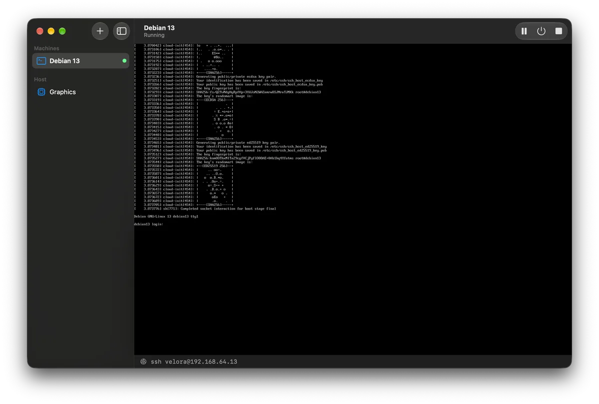

Zyvor · FluxVM for Mac
FluxVM
Real VMs on your Mac, from the menu bar.
FluxVM for Mac is a native menu-bar app that bundles the FluxVM engine. Start and stop the FluxVM daemon, list your VMs, start, stop and restart them, take and restore snapshots, and open the Studio console. Signed, notarized, with a 30-day trial. The FluxVM engine and CLI are source-available under the Zyvor Production License v1.0.
FluxVM-Mac-0.1.0.dmg · 36 MB · See current prices
Verified by Apple: Developer ID signed and notarized. This covers the Mac download, FluxVM-Mac-0.1.0.dmg, which is signed, notarized by Apple and stapled. The Linux engine and install script are not part of this notarization.
- Mac app for Apple silicon, macOS 27. It starts with a 30-day soft trial: nothing is disabled and no data is lost when it ends. The FluxVM engine is source-available under the Zyvor Production License.
- This download is the FluxVM for Mac menu-bar app. Linux servers use the FluxVM engine and its install script, unchanged: see the Quickstart.

What FluxVM for Mac gives you.
No terminal needed
Start and stop the FluxVM daemon from the menu bar. It is bundled with the app.
Your VMs, one click away
List VMs, start, stop or restart them, and take and restore snapshots.
Quiet by design
The app never locks anything and makes no network calls of its own.
Run your Mac's VMs without opening a terminal.
FluxVM for Mac wraps the FluxVM engine in a native menu-bar app. The engine is the same source-available Rust control plane; the app is the notarized, supported way to run it on a Mac.
Features
What the app does.
Daemon from the menu bar
Start and stop the FluxVM daemon, bundled with the app (FluxVM 0.4.21), without a terminal.
Your VMs
List VMs and start, stop or restart any of them.
Snapshots
Take and restore snapshots of a VM.
Studio console
Open FluxVM Studio, the web console built into the engine, from the app.
Quiet by design
The app never locks anything and makes no network calls of its own.
Same engine as the CLI
It bundles the engine that fluxctl and the REST API use, so what you learn in the docs applies. FluxVM docs.
Open engine, honest app.
The engine is source-available
The FluxVM engine and CLI are under the Zyvor Production License v1.0: non-production use is permitted, production use requires a commercial license (sales@zyvor.dev). The engine source is the tag v0.4.21 of the public repository.
The app is proprietary
FluxVM for Mac itself is proprietary and its source is private. It is not distributed as source.
Third-party libraries
The bundle includes libhivex and GNU gettext's libintl (both LGPL-2.1+) as separate dynamic libraries. Their licence texts ship inside the app.
Specs and requirements.
- Requires
- macOS 27
- Chip
- Apple silicon
- Build
- Signed and notarizedDistributed as FluxVM-Mac-0.1.0.dmg.
- Version
- 0.1.0Bundles FluxVM 0.4.21.
- Trial
- 30 daysThe app runs without a key. For a trial key, email sales@zyvor.dev.
- Engine licence
- Apache-2.0The app is proprietary.
One honest limit
vmnet (bridged and shared) networking and USB passthrough are not available in this build: they need entitlements Apple has not granted us.
Get started in three steps.
Download
Get
FluxVM-Mac-0.1.0.dmgfrom the release page.Verify and install
Check the download with
shasum -a 256, open the DMG and drag FluxVM to Applications.Open and add your key
Open the app and enter your 30-day trial key. To get one, write to sales@zyvor.dev.
FluxVM for Mac 0.1.0 · SHA-256
2bbfef75231aab877dc393c2a4a29fd7478745f347c07d8d988fc44bc14a17e6Verify: echo "2bbfef75231aab877dc393c2a4a29fd7478745f347c07d8d988fc44bc14a17e6 FluxVM-Mac-0.1.0.dmg" | shasum -a 256 -c
Prices and licenses
Current prices, in your currency where available, are on zyvor.dev. The FluxVM engine is source-available under the Zyvor Production License: non-production use is permitted and production use needs a commercial license. The Mac app starts with a 30-day soft trial. You can ask for a 30-day trial before you decide.
Questions, answered.
Is the FluxVM engine still source-available?
Yes. The FluxVM engine and CLI are under the Zyvor Production License v1.0 and the source stays public; non-production use is permitted, production use needs a commercial license. FluxVM for Mac is a separate, proprietary app that bundles the engine.
Is the Mac app open source?
No. The app is proprietary and its source is private. The engine it bundles is under the Zyvor Production License v1.0.
How do I get a trial key or a licence?
Write to sales@zyvor.dev. The trial lasts 30 days. It is a soft trial: nothing is disabled and no data is lost when it ends.
Can I still build FluxVM from source on a Mac?
Yes. Prebuilt macOS tarballs and the Homebrew formula were withdrawn after 0.4.21. Build from source as the Quickstart describes, or use the app.
What about Linux?
Nothing changes. The install script and Linux release tarballs are documented in the README.
Which Macs and macOS versions?
Apple silicon, macOS 27.
Will macOS warn me when I open it?
No. The app is signed with our Apple Developer ID and notarized. Verify the checksum on the release page if you like.